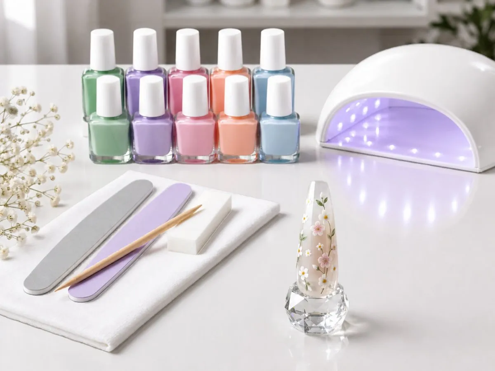

Nagelsalon in Nijmegen: de juiste salon voor jouw wens
Bijgewerkt op 22 november 2026.
Gellak, BIAB, acryl of een handgeschilderd ontwerp: bij een nagelsalon kies je niet alleen een behandeling, maar ook een sfeer. De ene salon zit midden in de winkelstraat, de andere is een rustige kamer waar je de enige klant bent. Daarom zetten we de salons per wens op een rij.

Zo hebben we gekozen
We lazen in november 2026 de websites van de nagelsalons in onze bedrijvengids. Per wens kozen we de salons die daar het best bij passen. Bijna overal werk je op afspraak, en de meeste salons laten je online boeken.
Tussendoor in het centrum
Md Fantasy Nails: alles onder één dak sinds 2011
In de Burchtstraat kies je uit acryl, gel, polygel, dipping powder, BIAB en gellak met een spa manicure. Er is ook een cosmetische spa pedicure.
Stuur vooraf een foto van wat je wilt, dan denken ze met je mee. In de eigen academy kun je zelf het vak leren. Op donderdag ben je tot zeven uur welkom.
Goed voor: wie veel keuze wil en na het werk wil gaan.
Cutiecles Nails: manicure en pedicure in de Koningstraat
Midden in het centrum zit je bij Cutiecles in een comfortabele stoel voor een manicure of een pedicure. De verzorging van je nagels en je huid staat voorop.
De salon is van maandag tot en met zaterdag open. Je boekt online, of je belt even.
Goed voor: handen en voeten in één afspraak.
Voor nail art
Lakjenagel: bloemetjes, bruidsnagels en Vierdaagse-kleuren
Linda begon in de eerste lockdown met gelpolish op haar eigen nagels en heeft nu een salon aan huis. Je komt er voor gellak, BIAB en acrylgel, maar vooral voor nail art.
Heb je zelf een idee, stuur het dan op. Tijdens de Vierdaagse zet ze sets in de kleuren van het feest. Een afspraak maak je via mail, telefoon of het formulier.
Goed voor: wie met een inspiratiefoto komt.
The Nail Art Club: van subtiel tot opvallend
Aan de Sint Annastraat draait alles om nail art. De stylisten maken samen met jou een ontwerp, van iets kleins tot een opvallende set.
Ze werken met TPO-vrije gels. Je boekt online, en met vragen stuur je een WhatsApp.
Goed voor: wie let op wat er op de nagels komt.
Rustig en persoonlijk
Salon La Mirage: altijd de enige klant
Mirjam werkt sinds 2012 in haar eigen privésalon aan de Oranjesingel. Je bent er altijd de enige klant, met een kop koffie of thee.
Je komt er voor BIAB en gel polish, van naturel tot kleurrijk. Ze doet ook een lash lift, zodat je eigen wimpers weken een krul houden.
Goed voor: wie geen drukte om zich heen wil.
Black Dahlia: je eigen nagels laten groeien
Margo was orthopedagoog voor ze nagelstyliste werd, en werkt nu vanuit huis in Hatert. Ze vijlt zo min mogelijk, zodat je eigen nagel gezond blijft.
Je komt voor BIAB of gellak op je eigen nagels. Ze werkt alleen op afspraak, dus je wacht niet. De salon is op de eerste verdieping, alleen via de trap.
Goed voor: nagelbijters en wie zwakke nagels heeft.
Buiten het centrum
Beauty-Nailz: ruim de tijd in Lent
In Lent werkt Meliz in haar gediplomeerde salon aan gellak, BIAB en nieuwe sets met Apres Gel-X. Ze doet ook een cosmetische pedicure.
Ze neemt bewust ruim de tijd, met extra aandacht voor je nagelriemen. Je bent er doordeweeks welkom, op woensdag tot zeven uur.
Goed voor: wie in Nijmegen-Noord woont.
Jasmines: acryl en een Japanse head spa
Bij winkelcentrum Dukenburg zet Jasmines nagels in klassieke stijl en volgens de nieuwste trends, met acrylnagels als specialiteit.
Wil je meer, boek dan een Japanse head spa: een hoofdmassage met haarverzorging. Open van maandag tot en met zaterdag.
Goed voor: een verwenmiddag met nagels en ontspanning.
Ook goed
- Bij Studio Straklak kies je uit vier niveaus nail art, van strak en minimalistisch tot uitbundig handgeschilderd. Je boekt online.
Meer over het kiezen van een salon lees je in de juiste nagelsalon in Nijmegen kiezen.
Meer in onze gids nagelsalons in Nijmegen.
Veelgestelde vragen
Wat is het verschil tussen gellak en BIAB?
Gellak is een kleurlaag die je nagels een paar weken laat glanzen. BIAB is een dikkere gel die je eigen nagel sterker maakt, handig als je nagels zwak zijn of als je ze wilt laten groeien.
Welke nagelsalon in Nijmegen doet nail art?
Lakjenagel, The Nail Art Club en Studio Straklak zijn gespecialiseerd in nail art. Ook bij Md Fantasy Nails kun je steentjes, glitters en ontwerpen kiezen.
Waar laat je acrylnagels zetten in Nijmegen?
Md Fantasy Nails in de Burchtstraat en Jasmines in Dukenburg zetten acrylnagels.
Welke nagelsalon is 's avonds open?
Md Fantasy Nails is op donderdag open tot zeven uur, Beauty-Nailz op woensdag.